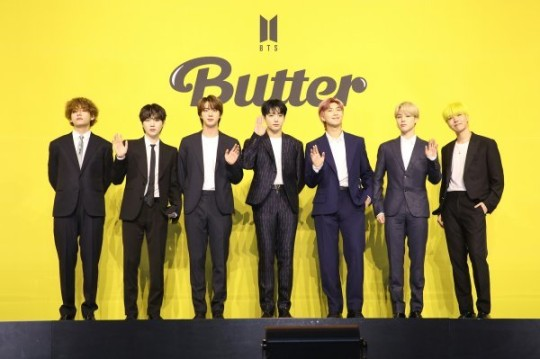

미국 빌보드는 2일(현지시간) 공식 홈페이지에 게시한 기사를 통해 "방탄소년단의 디지털 싱글 'Butter'가 최신 차트(8월 7일 자)에서 통산 9번째 '핫 100' 1위를 차지했다"라고 전했다. 이로써 'Butter'는 지난 1월부터 3월까지 8주간 '핫 100' 1위를 차지했던 올리비아 로드리고(Olivia Rodrigo)의 'Drivers License'를 제치고 올해 '핫 100' 차트에서 가장 많이 1위를 차지한 곡이 됐다.

방탄소년단은 'Butter'로 지난 6월 5일 자 차트에서 진입과 동시에 '핫 100' 1위로 직행, 7주 연속 정상을 지키다 7월 24일 자 차트에서 자신들의 신곡 'Permission to Dance'와 1위 '바통 터치'하는 진기록을 세운 바 있다.